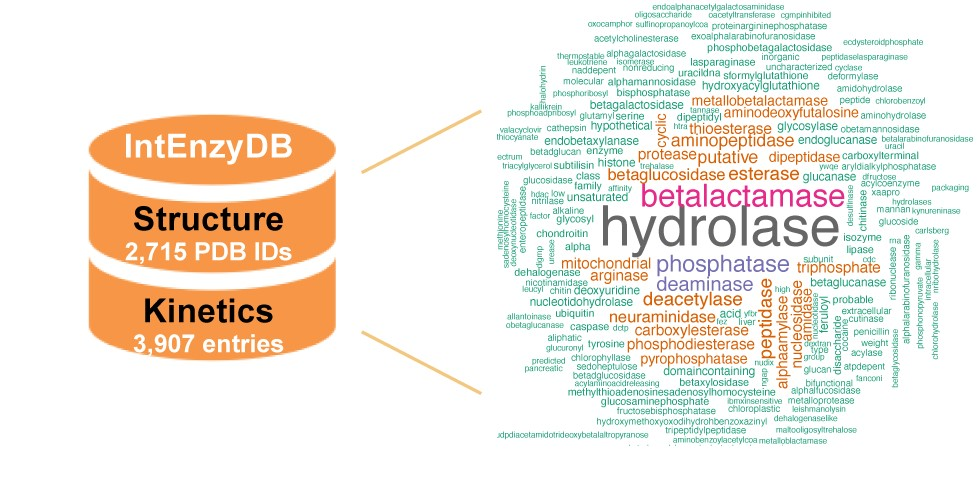

A relational database for hydrolases, stores clean and tabulated structural and catalytic data for hydrolases. This database contains curated experimentally characterized kinetics parameters (i.e., 3,907 kcats and 4,175 KMs) with experimental conditions, and 2,715 PDB structures with chain level, amino acid level and atom level information corresponding to the kinetics parameters. IntEnzyDB contains nine sub-types of hydrolases that act on ester bonds (EC 3.1), N-glycosidic bond (EC 3.2), ether bonds (EC 3.3), peptide bonds (EC 3.4), carbon-nitrogen bonds other than peptide bonds (EC 3.5), acid anhydrides (EC 3.6), carbon-carbon bonds (3.7), halide bonds (3.8), phosphorus-nitrogen bonds (EC 3.9).
We built IntEnzyDB to resolve the challenges for collecting, cleaning and integrating enzyme structural data and kinetics data that stored in different databases (e.g., PDB, UniProt, BRENDA, and SABIO-RK) with various data formats and standards. With IntEnzyDB, it’s easier to explore the properties and spatial distributions for rate-enhancing mutations across a diverse range of hydrolase sequences, functions, and substrate types. Specially designed for advanced statistical analysis and data-driven modeling, IntEnzyDB enhances the efficiency of data preprocessing and provide the data formatted ready for modeling.
IntEnzyDB has a flattened data structure to facilitate advanced statistical analysis and data-driven modeling. Unlike Protein Data Bank (PDB) and other object-oriented databases that store information of a protein using one individual data file, IntEnzyDB uses one table for hydrolase kinetics and three tables for structure data of different scale, including a chain table, an amino acid table, and an atom table. Each table contains entries of all hydrolases stored. Different tables are connected by the keywords (i.e., foreign keys): UniProtKB, PDB ID and enzyme commission (EC) number. To ensure precise mapping of enzyme kinetics to structure, we have manually aligned the mutation residue sequence reported in the kinetics database (or labeled in Uniprot) with the PDB structure.
A Brief Introduction
A relational database for hydrolases, stores clean and tabulated structural and catalytic data for hydrolases. This database contains curated experimentally characterized kinetics parameters (i.e., 3,907 kcats and 4,175 KMs) with experimental conditions, and 2,715 PDB structures with chain level, amino acid level and atom level information corresponding to the kinetics parameters. IntEnzyDB contains nine sub-types of hydrolases that act on ester bonds (EC 3.1), N-glycosidic bond (EC 3.2), ether bonds (EC 3.3), peptide bonds (EC 3.4), carbon-nitrogen bonds other than peptide bonds (EC 3.5), acid anhydrides (EC 3.6), carbon-carbon bonds (3.7), halide bonds (3.8), phosphorus-nitrogen bonds (EC 3.9).
The reason why we build this database
We built IntEnzyDB to resolve the challenges for collecting, cleaning and integrating enzyme structural data and kinetics data that stored in different databases (e.g., PDB, UniProt, BRENDA, and SABIO-RK) with various data formats and standards. With IntEnzyDB, it’s easier to explore the properties and spatial distributions for rate-enhancing mutations across a diverse range of hydrolase sequences, functions, and substrate types. Specially designed for advanced statistical analysis and data-driven modeling, IntEnzyDB enhances the efficiency of data preprocessing and provide the data formatted ready for modeling.
The special architecture of this database
IntEnzyDB has a flattened data structure to facilitate advanced statistical analysis and data-driven modeling. Unlike Protein Data Bank (PDB) and other object-oriented databases that store information of a protein using one individual data file, IntEnzyDB uses one table for hydrolase kinetics and three tables for structure data of different scale, including a chain table, an amino acid table, and an atom table. Each table contains entries of all hydrolases stored. Different tables are connected by the keywords (i.e., foreign keys): UniProtKB, PDB ID and enzyme commission (EC) number. To ensure precise mapping of enzyme kinetics to structure, we have manually aligned the mutation residue sequence reported in the kinetics database (or labeled in Uniprot) with the PDB structure.